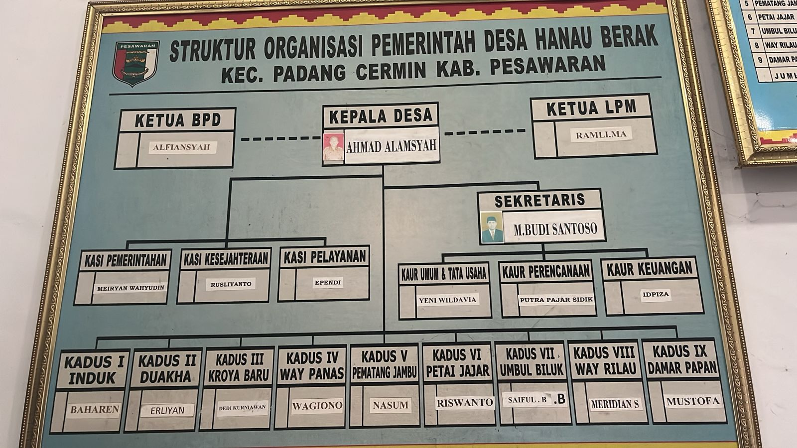

PROFIL DESA
Visi & Misi Desa
Visi
"Menjadi Desa Hanau Berak yang Maju, Sejahtera, dan Berkelanjutan melalui Pemberdayaan Masyarakat dan Pengembangan Potensi Lokal."
Misi
- Meningkatkan kualitas hidup masyarakat melalui peningkatan akses pendidikan, kesehatan, dan ekonomi.
- Mengembangkan potensi lokal melalui pengembangan pariwisata, pertanian, dan industri kecil.
- Meningkatkan partisipasi masyarakat dalam proses pengambilan keputusan dan pengelolaan desa.
- Meningkatkan kualitas lingkungan hidup melalui pengelolaan sumber daya alam yang berkelanjutan.
- Meningkatkan kerjasama dengan pemerintah, swasta, dan masyarakat sipil untuk mendukung pembangunan desa.
Aparatur Desa
Ahmad Alamsyah
Kepala Desa

Alfiansyah
Ketua BPD
Ramli.MA
Ketua LPM
M.Budi Santoso
Sekretaris
Struktur Organisasi

Sejarah Desa
Desa Hanau Berak asal mulanya merupakan desa tertua yang ada di Kecamatan Padang Cermin Kabupaten Pringsewu. Dengan luas wilayah 14.200 Ha, dinamakan Desa Hanau Berak karna asal kata dari Ham dan Bekhak (Ham = Danau dan Bekhak = Lebar). Desa Hanau Berak berdiri sekitar tahun 1920 dan telah dijabat oleh beberapa Kepala Desa.
Geografis
Batas wilayah:
- Utara: Desa Harapan Jaya Kec Way Ratai
- Selatan: Desa Banjaran Kec Padang Cermin
- Barat: Desa Tambangan Kec Padang Cermin
- Timur: Desa Padang Cermin Kec Padang Cermin
Demografi
Jumlah penduduk: 2.236 jiwa
- Laki-laki: - jiwa
- Perempuan: - jiwa
- Jumlah KK: 347
Data Desa
- Luas Wilayah: 14.200 Ha
- Jumlah Dusun: -
- Jumlah RT: -
- Jumlah RW: -